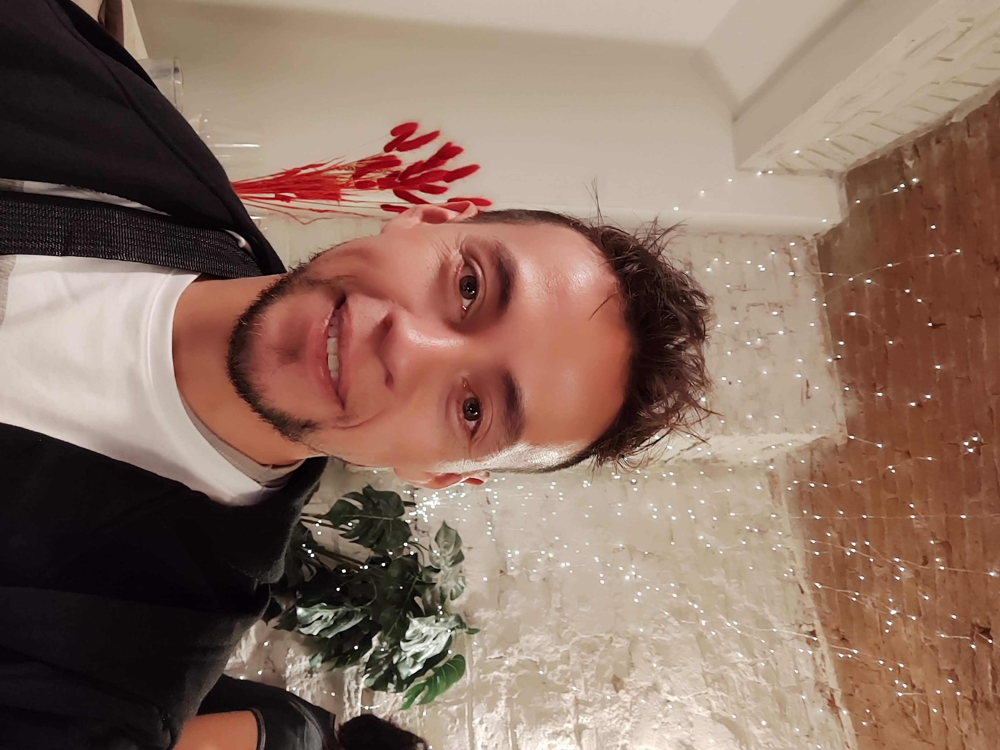

El software testing es una industria creciente en Latinoamérica y el mundo, 1 de
cada 5
empleos en Tecnologías de la información corresponde a la rama de testing,
si estas buscando hacerte con una Carrera que te asegure tu crecimiento personal y profesional esta
área
es para ti. No importa si te has formado en otras profesiones, incluso
si estas saliendo de educación secundaria, el testing es una área que necesita de todo tipo de
personas
quienes puedan examinar el producto desde la óptica de un usuario final.
Walter Alexis Zabala
Ingeniero ElectrónicoContact
+123 8767 5465
+122 2345 3763
+122 2345 3763